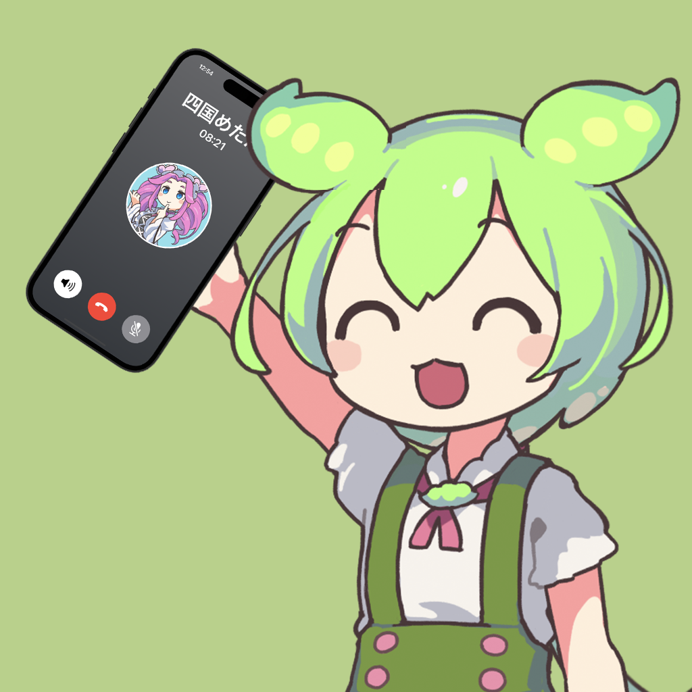

AI会話
OpenAI の最新モデルが、ずんだもんらしい自然な返事をリアルタイムで生成。何度でも話したくなる。

ZunTalkAI Voice Talk
電話をかける感覚で、ずんだもんと自然に会話。
AIが応答を考え、VOICEVOX の声でリアルタイムに話しかけてくれるのだ！
iOS 17.0 以上 / iPhone 対応
OpenAI の最新モデルが、ずんだもんらしい自然な返事をリアルタイムで生成。何度でも話したくなる。
iOS の Speech Framework であなたの声をその場で認識。キーボード入力は不要、話しかけるだけ。
VOICEVOX Core でずんだもんの声を生成。文章を区切って先読み合成するから、テンポよく会話できる。
アプリを開いてずんだもんに発信。呼び出し音のあと、会話がはじまるのだ。
マイクに向かって自由におしゃべり。あなたの声をリアルタイムに聞き取ります。
AIが考えた返事を、ずんだもんの声で即座に再生。テンポよく会話が続きます。